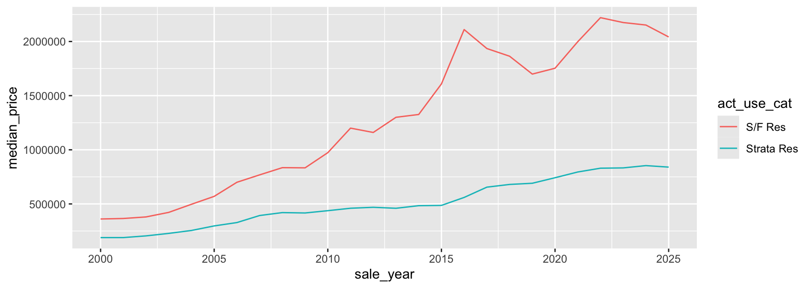

library(tidyverse)
bca <- read_rds("data/bca262.rds")
van <- bca |> filter(juris_label == "City of Vancouver")COMM 407 · Prompt, read, and check
31 October 2026
Your job shifts from writing code to guiding and checking it.
c407 folder, write code, and run it.We will use coding agents in this course.
Signing in with an account needs no API key. Each tool needs a plan that includes it.
Check the publisher before you install: OpenAI for Codex, Anthropic for Claude Code. Lookalike extensions exist.
AGENTS.md in your c407 folder lists where files go, which packages to use, the data traps in this course, and the checks the agent should report, such as row counts after each join.CLAUDE.md, which is also in your folder.In a new Quarto document, chart the median sale price by year
in the City of Vancouver from data/bca262.rds,
separately for single-family and strata homes.The agent knows R. Only you know what you want to measure.
Each new message is processed together with the whole conversation so far. Long conversations use up your plan’s limit faster, and the answers can get worse: the AI loses early instructions and mixes in old versions of your code.
Small steps keep every answer small enough to guide and check.
The data have `r format(nrow(van), big.mark = ",")` sales in the City of Vancouver.
Their median price is `r format(median(van$price), big.mark = ",")` dollars.The report shows: The data have 282,521 sales in the City of Vancouver. Their median price is 595,000 dollars.
Every number in your text should come from R.
.Renviron. Code reads them with Sys.getenv()..Renviron like any file in c407. If a key appears in its output, treat the key as leaked.How have home prices in the City of Vancouver changed since 2000?
Make a chart of the median sale price by year from data/bca262.rds,
in a new Quarto document.The single-family median is about twice the strata median. The share of each type also changes from year to year. So if you take one median across all sales, it can move just because more condos sold that year, even when prices didn’t change.
- One line per type (strata and single-family) on the same chart. (Recommended.)
- One median of all sales pooled together.
- Single-family homes only, or strata only.
Sales in the file end on 11 March 2026, so I’ll stop the chart at 2025 either way.
Which would you pick, and why?
The agent writes the code. You decide where the analysis goes.

mix <- van |>
filter(year(sale_date) %in% c(2011, 2015)) |>
group_by(sale_year = year(sale_date)) |>
summarise(single_family = median(price[act_use_cat == "S/F Res"]),
strata = median(price[act_use_cat == "Strata Res"]),
all_sales = median(price),
strata_share = mean(act_use_cat == "Strata Res"))
mix# A tibble: 2 × 5
sale_year single_family strata all_sales strata_share
<dbl> <dbl> <dbl> <dbl> <dbl>
1 2011 1200000 460200 661500 0.618
2 2015 1608000 486450 673000 0.687Single-family prices rose 34% and strata prices 6%, yet the median of all sales rose only 2%. Cheaper strata homes grew from 62% to 69% of sales, as in deck 05.
The agent listed its choices. Reading them and acting on them is your job.
You are expected to understand every line of code, whether you or the AI wrote it.
When you meet a line you don’t know:
scripts/prices.qmd: I think it drops sales without a floor area. Am I right?” AGENTS.md tells it to check your guess, then explain what the line does to the rows and columns, and why.Guess first, then ask or run. The guess is what you practise for the exam.
Visible errors
Ask the AI again.
Silent errors
You must catch these yourself.
Common silent errors: a median that mixes property types, a join that duplicates rows, a wrong census vector, a geocoding match in the wrong city.
sales <- tibble(sale_id = 1:3, neigh = c("Kitsilano", "West End", "Marpole"))
neigh_info <- tibble(neigh = c("Kitsilano", "Kitsilano", "West End", "Marpole"),
area_km2 = c(5.5, 5.5, 2.0, 5.8))
sales |> left_join(neigh_info, by = "neigh") |> nrow()[1] 4Three sales became four rows, because Kitsilano appears twice in neigh_info: the trap from deck 07. AGENTS.md tells the agent to add relationship =, which turns the silent duplicate into an error:
AI can write the import code. You check what it read, as in this made-up file:
rents <- read_csv(I("area,units,median_rent
Burnaby,24510,\"1,725\"
Coquitlam,6875,1650
Lions Bay,12,**
Total,31397,1700"))
glimpse(rents)Rows: 4
Columns: 3
$ area <chr> "Burnaby", "Coquitlam", "Lions Bay", "Total"
$ units <dbl> 24510, 6875, 12, 31397
$ median_rent <chr> "1,725", "1650", "**", "1700"What goes wrong if you sum units, or average median_rent?
rents, the Total row would double sum(units).<chr> hides symbols such as ** (suppressed) or a comma, as in median_rent.AGENTS.md tells the agent to run these checks and report them. Reading what it reports is your job.
AGENTS.md makes the agent report row counts and the rows that missing values drop. Three checks stay with you:
Review scripts/prices.qmd. My goal: <your goal>.
List every choice that could change the answer.
Do not edit the file.Its flags are leads to check. “Looks fine” is not a check.
You write the exam without AI. Most questions ask you to read code: say what a line does, predict its output, or find a silent error.
| What it means | How to study | |
|---|---|---|
| Know | Write it without help | Write it from memory, then run it to check |
| Recognize | Say what the line does | Guess what each line of the deck’s code does, then run it to check |
| Look up | Find it when you meet it | Don’t memorize it. Use ?fn or ask the agent |
Each subsequent deck that teaches code ends with these three lists. Spend your study time on the first two.
COMM 407